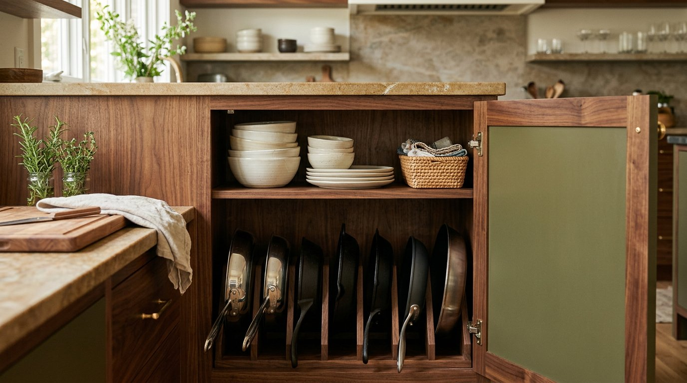

KITCHEN STORAGE / BUYING GUIDE
How do you choose a pan organizer?

Measure the widest pan including handles, the shelf depth, and the opening between the hinges. Check the listing’s configuration and load limits against your heaviest pan. Leave enough room to lift cookware out without moving the rack.
A listing to compare
Adjustable pan organizer. The submitted link resolved to this listing in our check. It has not been confirmed as the intended product or validated for Associates tracking. This is not a hands-on review.
View Amazon listing ↗ (not an affiliate link)
Images are generated category illustrations. Check current specifications and price on the listing.
All buying guides ↗